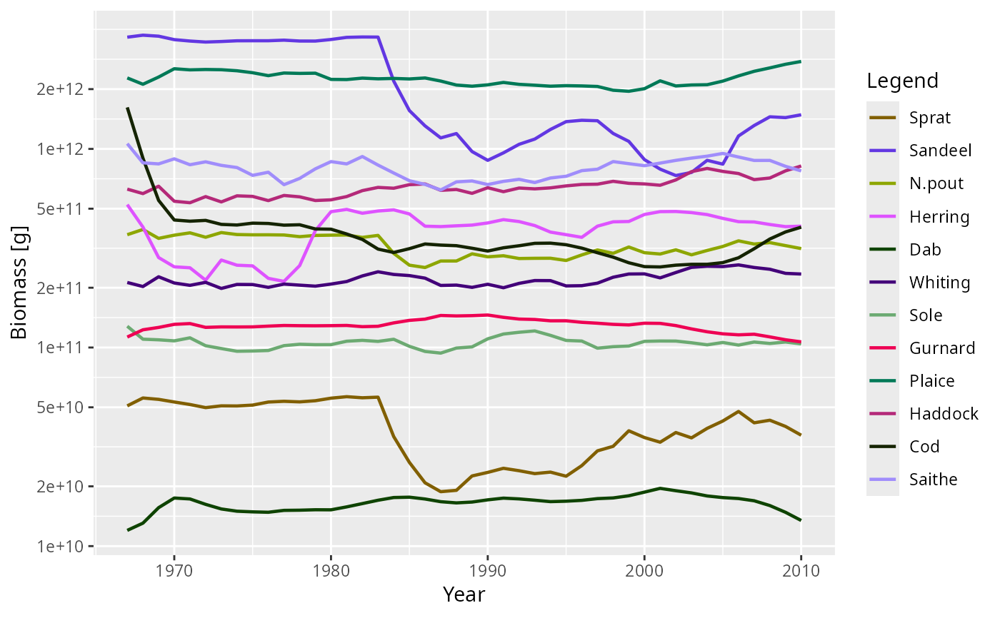
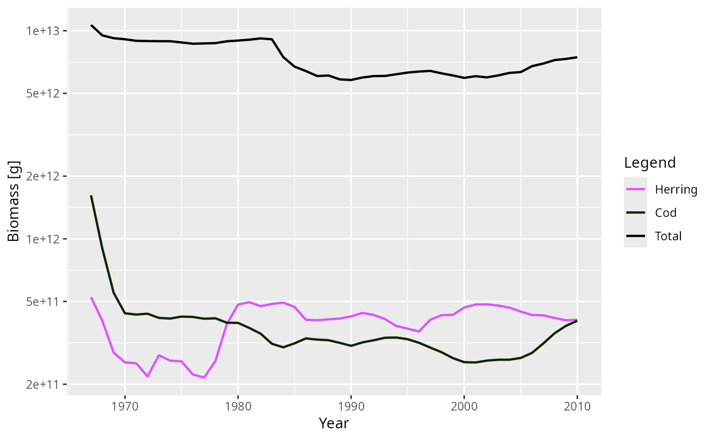
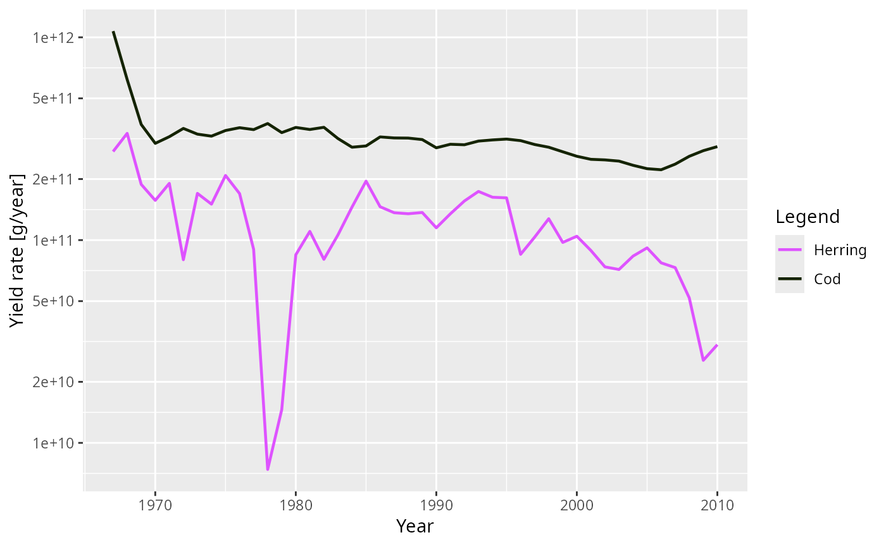

Plot method for ArrayTimeBySpecies objects
Source: R/ArrayTimeBySpecies-class.R
plot.ArrayTimeBySpecies.RdSee plot() for an overview of the mizer plotting system and the
arguments shared by all of its methods.
Arguments
- x
An
ArrayTimeBySpeciesobject.- species
Character vector of species to include.
NULL(default) means all species.- tlim
A numeric vector of length two providing lower and upper limits for the time axis, e.g.
c(1980, 2000). UseNAto apply no limit at that end. Default isc(NA, NA).- y_ticks
The approximate number of ticks desired on the y axis.
- ylim
A numeric vector of length two providing lower and upper limits for the value (y) axis. Use
NAto refer to the existing minimum or maximum.- total
A boolean value that determines whether the total over all selected species is plotted as well. Default is
FALSE.- background
A boolean value that determines whether background species are included. Ignored if the model does not contain background species. Default is
TRUE.- highlight
Name or vector of names of the species to be highlighted.
- log_x
If
TRUE, use a log10 x-axis. Default isFALSE.- log_y
If
TRUE, use a log10 y-axis. Default isTRUE.- log
Character string specifying which axes should use log10 scales, in the same form as the base
plot()argument. For example,"x","y","xy"or"". If supplied, this overrideslog_xandlog_y.- return_data
If
TRUE, return the data frame instead of the plot.- ...
Unused.
Examples
# \donttest{
plot(getBiomass(NS_sim))

plot(getBiomass(NS_sim), species = c("Cod", "Herring"), total = TRUE)

plot(getYield(NS_sim), species = c("Cod", "Herring"))

# }